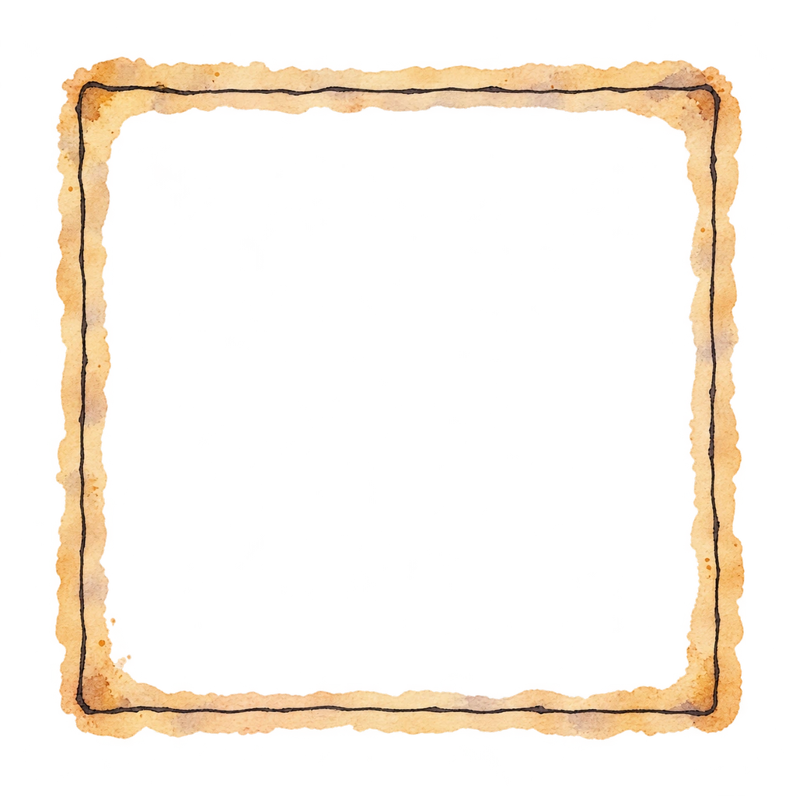
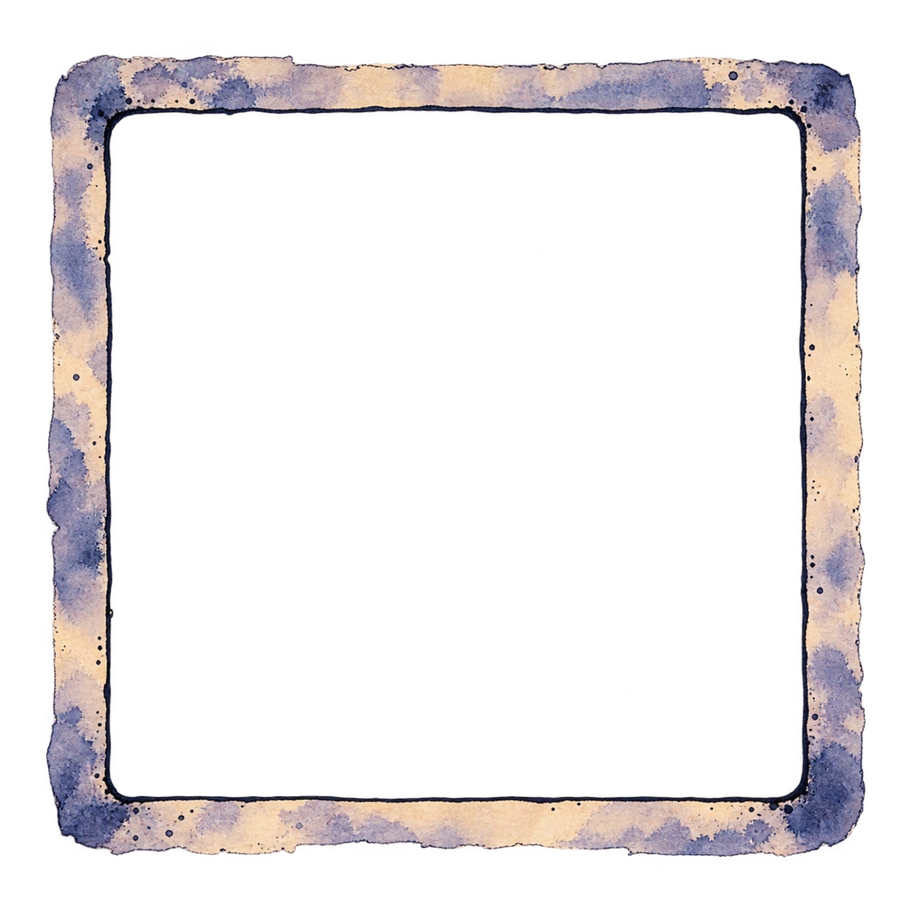
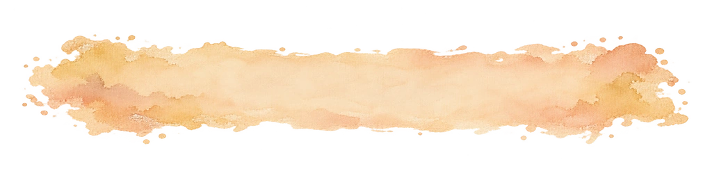
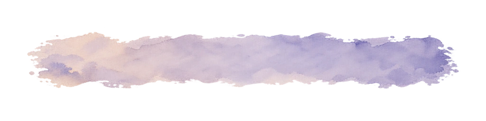

dodgethis / splash / painted card materials
Ink, wash and paper.
Two loose hand-ink frames, two title washes and one deckled paper ground. Warm mineral pigments and paper tooth take the cards toward the splash’s aquarelle feel. No ornament, hard bevels or stitched seams.
 MOBA
MOBA
 MOBA
MOBA
Layered study using the actual WebPs and the slice recipes below. These are materials; labels remain live text. Checkerboards below show transparency and are not baked into the images.
Five materials


01 / Day ink frame
9-slice: cut 160 px from each side; keep corner cells fixed, stretch the four middle edges. Leave the centre empty. Start with a 30 px rendered border.
01-day-ink-frame.webp · 1024 × 1024 · alpha

02 / Night ink frame
Same 160 px cuts and 30 px border as day. Quiet violet pigment around the hand-drawn line; centre remains transparent.
02-night-ink-frame.webp · 1024 × 1024 · alpha

03 / Warm title wash
Horizontal 3-slice: 96 px left and right caps, 832 px middle. Keep caps about 18 px
wide and stretch the middle. Use 0 96 fill; the wash’s soft top and
bottom edges stay in the middle cell.


04 / Violet title wash
Same 96 px horizontal caps. Keep the band about 48–64 px high; set dark ink text over the pale centre.
04-night-title-wash.webp · 1024 × 256 · alpha

05 / Deckled paper ground
9-slice: 128 px all around, with fill. Keep corners at 24 px, stretch
edge cells and fill the plain centre. Lay it under either hollow frame.
Slice recipe
Layer order: paper ground → ink frame → illustration and title wash → live text. The frame
files already include their pigment bleed. Use stretch for the edges: the
wash is softly variable, not a guaranteed seamless repeat tile. Keep each corner fixed;
avoid scaling the whole frame to a tall card.
/* Hollow frame, on its own overlay layer */
border: 30px solid transparent;
border-image: url("01-day-ink-frame.webp") 160 / 30px / 0 stretch;
/* Paper ground, on a separate layer */
border: 24px solid transparent;
border-image: url("05-deckled-paper.webp") 128 fill / 24px / 0 stretch;
/* Title wash, horizontal caps; fill carries the full middle */
border: 0 solid transparent;
border-left-width: 18px;
border-right-width: 18px;
border-image: url("03-day-title-wash.webp") 0 96 fill / 0 18px / 0 stretch;
Paint is intentionally irregular. Let the drawn frame establish the contour; a second geometric border or heavy offset shadow would bring the hard card back.